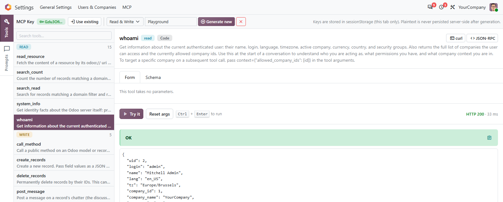
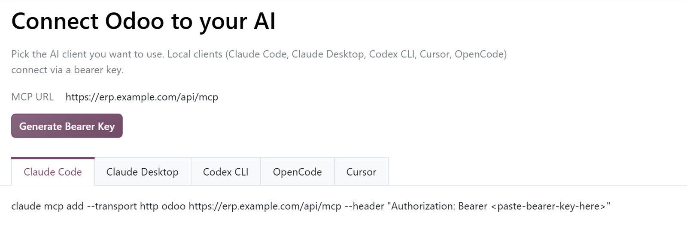
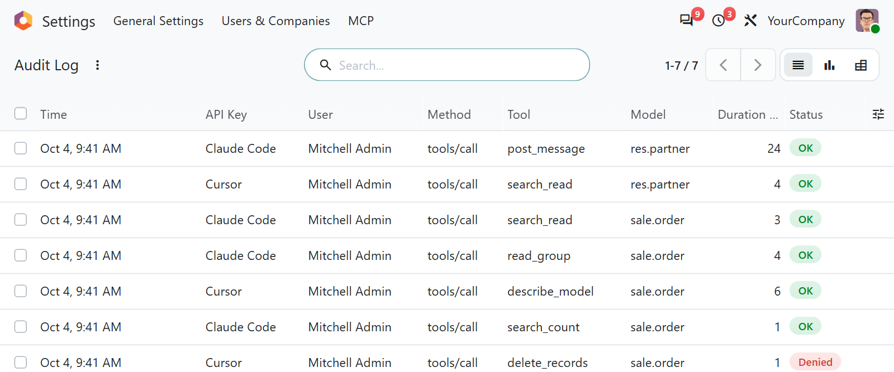
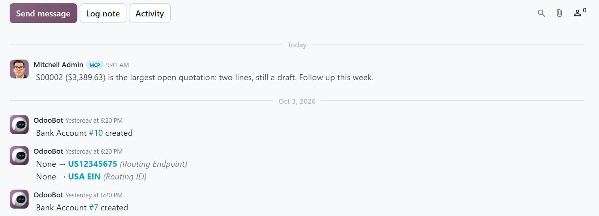

Connect Claude, Codex, Cursor or any other MCP client to Odoo with a key. The agent searches, reads, writes and prints with the rights of the user the key belongs to, and every call it makes lands in an audit log.
No bridge process and no middleware: clients talk to Odoo itself, at /api/mcp, over Streamable HTTP.
Each key has its own scope, read or read and write, and its own rate limit. Archive the user and the key stops working.
The audit log keeps the key, tool, model and outcome of each call, and the chatter marks what an agent wrote.

Each tool carries a schema and a description written for a model, and runs as the key's user, so access rights and record rules apply as they do in the web client. Read tools are marked read-only, so a client can let them run without asking.
Search, read, count and group, create, update and delete, with relational fields written as Odoo command lists.
One tool runs a public method on a model or on the records you name, with arguments. Methods that start with an underscore stay closed.
Render any report as PDF, HTML or text, and export records to CSV or XLSX through Odoo's own export, related fields included.
Models and fields, the user's access rights, installed modules and languages, so an agent finds its way in any database.
Attachments and binary fields come back as odoo:// links, and the agent reads a file only when it needs it.
Ready-made prompts show up as slash commands in clients that offer them, and the server completes model names as you type.
List the tools, read, then write: plain JSON-RPC, one POST each, no session to open. $ODOO is your server's address and $KEY an MCP key. With several databases on one server, name yours in the X-Odoo-Database header.
# 01 Discover: the tools this key can see, each with its schema $ curl $ODOO/api/mcp -H "Authorization: Bearer $KEY" -H 'Content-Type: application/json' -d '{"jsonrpc": "2.0", "id": 1, "method": "tools/list"}' {"jsonrpc": "2.0", "id": 1, "result": {"tools": [{"name": "create_records", "description": "Create a new record. ...", "inputSchema": {...}}, ...]}} # 02 Read: search_read with a domain, the fields you want, a limit $ curl $ODOO/api/mcp -H "Authorization: Bearer $KEY" -H 'Content-Type: application/json' -d '{"jsonrpc": "2.0", "id": 2, "method": "tools/call", "params": {"name": "search_read", "arguments": {"model": "res.partner", "domain": [["is_company", "=", true]], "fields": ["name"], "limit": 1}}}' {"jsonrpc": "2.0", "id": 2, "result": {"content": [{"type": "text", "text": "[{\"id\": 10, \"name\": \"Acme Corporation\"}]"}]}} # 03 Write: update a record, as the user the key belongs to $ curl $ODOO/api/mcp -H "Authorization: Bearer $KEY" -H 'Content-Type: application/json' -d '{"jsonrpc": "2.0", "id": 3, "method": "tools/call", "params": {"name": "update_records", "arguments": {"model": "res.partner", "ids": [10], "values": {"comment": "Renewal quote sent."}}}}' {"jsonrpc": "2.0", "id": 3, "result": {"content": [{"type": "text", "text": "{\"success\": true, \"ids\": [10]}"}]}}
Connect shows your server's MCP address and a ready-made setup for Claude Code, Claude Desktop, Codex CLI, OpenCode and Cursor. Generate a key in the dialog and it is filled into every snippet; paste one into the client and the tools are there.
Any other client that speaks MCP over Streamable HTTP connects the same way: the address, and the key as a bearer token.


A user creates keys in their own preferences, each with a scope and a rate limit. A read-only key calls read tools only; a write is refused and logged as denied, and a key past its limit is answered 429.
The audit log keeps each call's key, user, tool, model, duration and outcome, with the request and the response, and clears itself after the retention you set.
A key is shown once, when it is generated, and stored as a hash, so a copy of the database holds no working key.
A message an agent posts, or causes through a change, carries an MCP badge in the chatter, and its tooltip names the key. It is still posted under the user's name, so nothing an agent does is anonymous.
The badge is a setting under MCP Server in the general settings, beside the log retention and the default rate limit for new keys.

What the server does not ship, a module of yours or a record in the backend can add — behind the same keys, scopes and audit log.
Inherit muk_mcp.mixin and decorate a method with @mcp_tool or @mcp_prompt: a name, a schema, read or write. Clients see it once the module is installed.
Write a tool or a prompt in the backend, in sandboxed Python. It needs no deployment, and it takes over a coded one of the same name.
The server keeps no session and no notification stream: every request carries its key, and a client lists the tools again when it needs them.
What you get for free, and what has to be paid work.
Issues and merge requests are welcome on the public repository. They are read — but no response time is promised.
A tool set built for your database, or a fix on a deadline, is paid work — quoted up front. Write to sale@mukit.at.
LGPL-3. Use it, change it, ship it inside your own work — no licence key, no database count.
Modules written for your process, on your Odoo version.
Odoo joined up with the systems you already run.
Hosting, deployment and upgrades you do not have to watch.
Your team taught the parts of Odoo they actually use.
An agreement, so an answer does not depend on who is free.
Odoo.sh or on-premise, Community or Enterprise, and an AI client that speaks MCP over Streamable HTTP. No extra Python packages.
Each user adds keys in their preferences. Settings › General Settings › MCP Server sets the log retention, the default rate limit and the chatter badge.
Depends on mail, base_setup, attachment_indexation and muk_web_utils. Install it like any other module; the endpoint is live at once.
Open Settings › MCP › Connect, generate a key and paste the snippet into your client. Try any tool first in the Playground.
Keys, the audit log and your own tools and prompts are records, and an upgrade keeps them. Clients connect to /api/mcp; on Enterprise, /mcp belongs to Odoo's own MCP server.
MuK IT GmbH, Vienna. Author and maintainer.
Tell us what the agent has to do, and we will tell you whether it needs a tool, a prompt or a module. MuK IT — Austrian Odoo partner, Vienna.